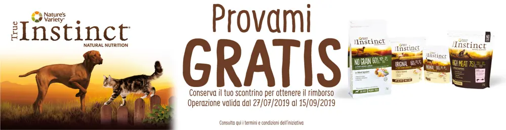
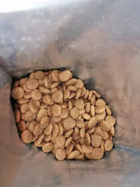
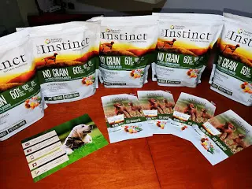
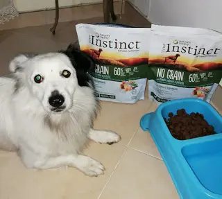
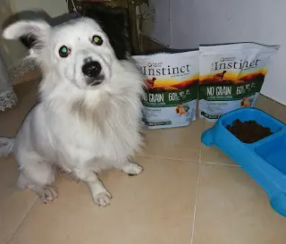
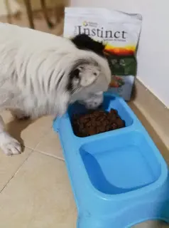
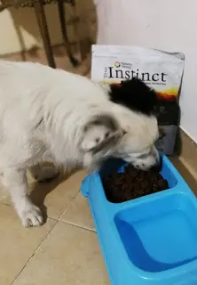
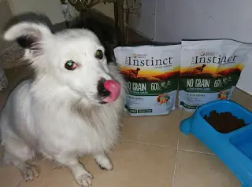
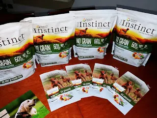
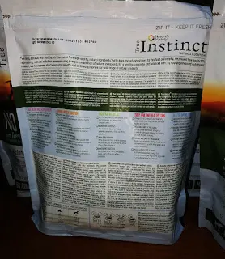

I cani e il cibo di TRUE INSTINCT

TrueInstinct, Grazie a trnd sono stata scelta per testare il marchio True Instinct - cibo per cani.
Ho ricevuto 3 kg di croccantini al salmone e patate da far provare al mio cucciolo. Posso già dirvi che lui le ha più che graditi, di conseguenza capisco che hanno un buon sapore.
Odore del cibo per cani
L'odore, non è tanto forte come tanti altri alimenti per cani e quindi, anche per me diventa un piacere riempire la sua ciotola :D

Sono al gusto di salmone, patate e verdure fresche.
Tutto associato per un buon apporto calorico e nutrizionale del cane.

Sono alimenti naturali senza cereali, adatti a cani di taglia media (tra gli 11 e i 25 kg) e anche per taglie grandi (tra i 25 e i 55 kg).


Mangiando questi croccantini possiamo stare sereni che il nostro cane può solo ricevere benefici.


Infatti, contiene il salmone che è un alimento che aiuta i muscoli scheletrici e a preservare l'attività fisica.
I ceci, patate, piselli, pollo e fibre con carboidrati digeribili e proteine.
Ma non solo, anche per un pelo e pelle sana possiamo stare tranquilli in quanto sono ricchi di omega 3, zinco e omega 6.
Ed in più, non meno importante, per un sistema immunitario forte, contiene un elevato contenuto di antiossidanti (vitamina E, vitamina C, selenio), zinco e proteine che contribuiscono al corretto funzionamento del sistema immunitario.

Insomma, un pasto completo che garantirà al nostro cane una vita serena e senza problemi di alimentazione con solo il 20% di grassi.

INGREDIENTI
Salmone* (23%), pollo disidratato (18%), piselli disidratati* (13%), farina di piselli*, carne di suino disidratata (8%), grassi animali (7%, stabilizzati con tocoferoli naturali), patate disidratate* (7%), ceci disidratati*, proteine idrolizzate (3,5%), polpa di barbabietola*, sostanze minerali, olio di pesce (0,5%), mele disidratate* (0,35%), carote disidratate* (0,35%), broccoli disidratati*, frutti rossi disidratati*(0,01%).
